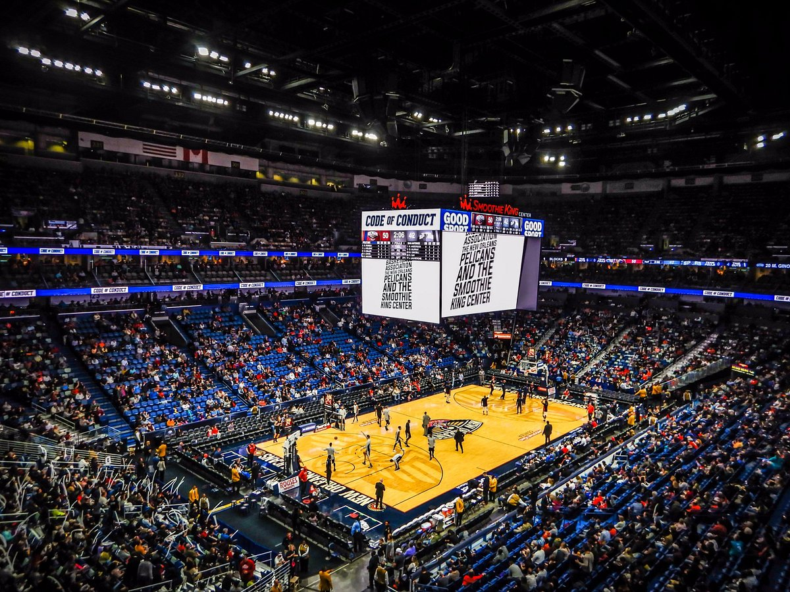

New Orleans Pelicans - Fundado em 2002, o New Orleans Pelicans teve uma trajetória inicial modesta, mas se tornou um time relevante na NBA nas últimas temporadas. A equipe passou a ser conhecida por seu elenco jovem e promissor, com destaque para jogadores como Anthony Davis, e atualmente Zion Williamson, que é uma das maiores promessas da liga. A franquia busca um título, e vem se consolidando como uma das principais forças no Oeste.
Elenco - Zion Williamson (#1), Brandon Ingram (#14), CJ McCollum (#3), Jonas Valančiūnas (#17), Trey Murphy III (#25), Herb Jones (#55), Dyson Daniels (#11), Larry Nance Jr. (#22), Kira Lewis Jr. (#13), Naji Marshall (#8).
Títulos NBA - 0
Títulos Conferência - 0
Estádio - Smoothie King Center (16.867)
